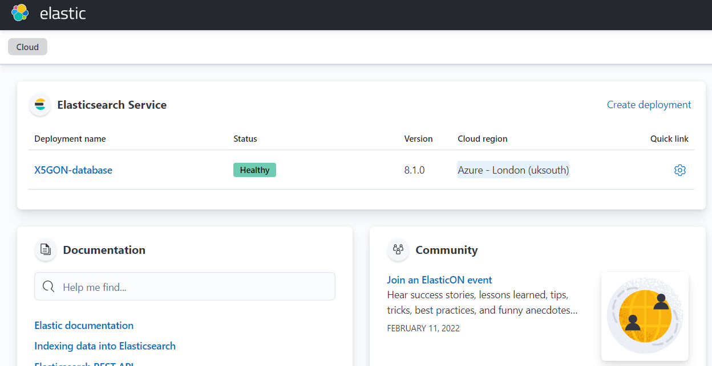
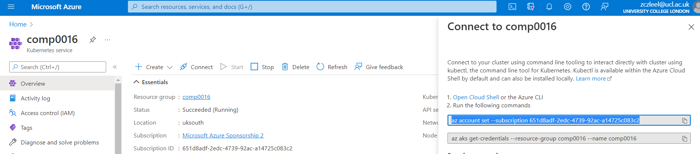

Deployment Manual
Database Deployment
PostgreSQL
- Search for PostgreSQL service in azure
- Deploy as a single server
- Specify Subscription, Resource group, Region, Admin username, and Admin password.
- Review and create a new database.
- Create a SQL table based on schema shown in the ER diagram below.

Elastic server
- Navigate to elastic.co
- Log in to the user account.
- Click on the create deployment and record the username and password of the elastic search deployment.

- Go to the elastic search deployment and upload the file to the elastic server.
- Run the “app_api” repository’s python file “elasticsearch_utils.py” that is located in the "source/controller/search_engine" in order to set the search algorithm.
Azure Docker Registry
- Search for Container registries service in azure
- Create a new registry
- Specify Subscription, Resource group, Region, registryname, and SKU
- Login to your registry using the following command
docker login .azurecr.io
Frontend
- Build your docker image in the local device using the following command
docker build -t .azurecr.io/ir_project_web:v1
- Push image to the azure docker registry using the following command
docker push .azurecr.io/ir_project_web:v1
Backend
- Build your docker image in the local device using the following command
docker build -t .azurecr.io/ir_project_app_api:v1
- Push image to the azure docker registry using the following command
docker push .azurecr.io/ir_project_app_api:v1
Kubenetes cluster
Build cluster
- Clone Deployment from the organisation "COMP0016-IR-Noisy-documents"
cd Deployment- Search for the Kubernetes service.
- Create a Kubernetes cluster
- Specify Subscription, Resource group, Region and Kubernetes Version
- Specify Docker Container Registry created in the Azure Docker Registry step.
- Review and create
Deployment on the cluster
- Clone Deployment from the organisation "COMP0016-IR-Noisy-documents"
cd Deployment- Login to the cluster by going to the Kubenetes dashboard
click on connect and type the command shown on the right side of the screenshot

- type command
kubectl apply -f kube-config
- find the external ip address by searching for Public IP addresses service in the azure dashboard and choose the one starting with Kubenetes with the corresponding resource group
- navigate to the ip address to start using the deployed website